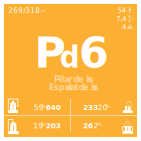

Pilar de cuatre
Denominació i catalogació del castell
el pilar
L’estructura d’un castell és el nombre i disposició dels castellers que formen el tronc del castell. [1] Juntament amb els pisos d’alçada, l’estructura és un dels dos paràmetres bàsics per distingir els diferents tipus de castells. [2] Un pilar és un castell d’estructura simple format per una persona per pis. [3] 1. «Diccionari casteller». TERMCAT, 2007. [Consulta: 11 novembre del 2012]. 2. Almirall, Josep. «Tots els castells». A: Castells, tocant el cel amb la mà. Triangle Postals, 2011, pp.113-211 3. Brotons i Navarro, Xavier. «Els castells: conceptes bàsics». A: Castells i castellers. Gua completa del món casteller. Lynx edicions, març del 1995, pp.13-54. ISBN 84-87334-17-2
Parts del castell
Taula de puntuacions del Concurs de Castells 2016
Estadística
Història “antiga”
Història “recent”